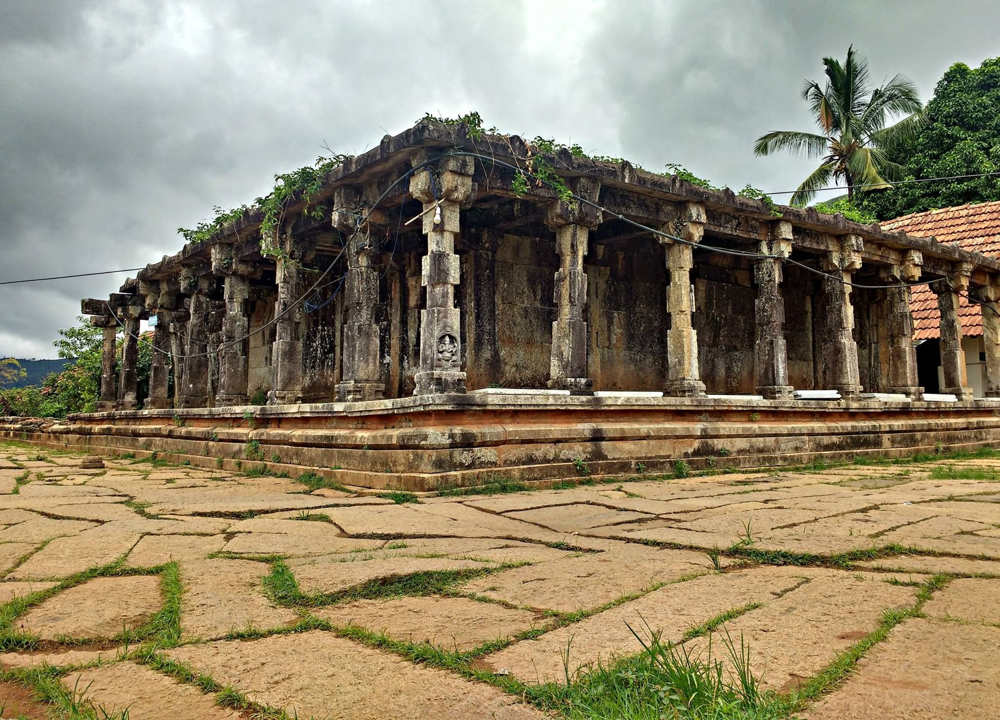

Places to Visit in Wayanad

Edakkal Caves
The Edakkal caves are two natural caves at a remote location at Edakkal, 25 km from Kalpetta in the Wayanad district of Kerala in India's Western Ghats.

Kuruva Island
Kuruvadweep or Kuruva Island is situated approx. 10 Kms. from Kattikkulam town of wayanad. Road leads to the dweep is inside forest.

Thirunelli Temple
Thirunelly Temple, Wayanad Overview. The Thirunelli Temple is an ancient temple dedicated to the Lord Maha Vishnu. It is located in the Wayanad district of Kerala.